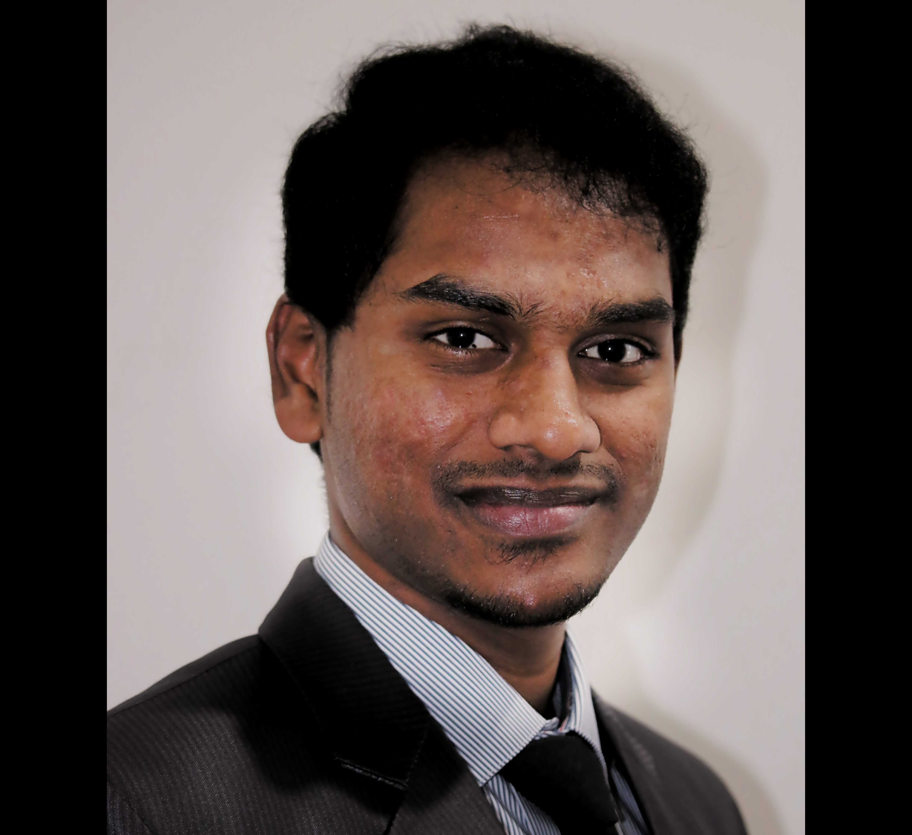

I am mainly into object oriented programming and web development.
I consider technology as a means of organizing oneself and staying up-to-date with the trends.
I believe a programmer/software engineer takes the role of a creator, in other words, we bring
a bunch of 0's and 1's to life."With great power comes great responsibility".
The world is a better place because of the technological community.
Cant imagine a world without computers, the internet, all the cat pictures and memes in it.
PS: I'm a dog person!